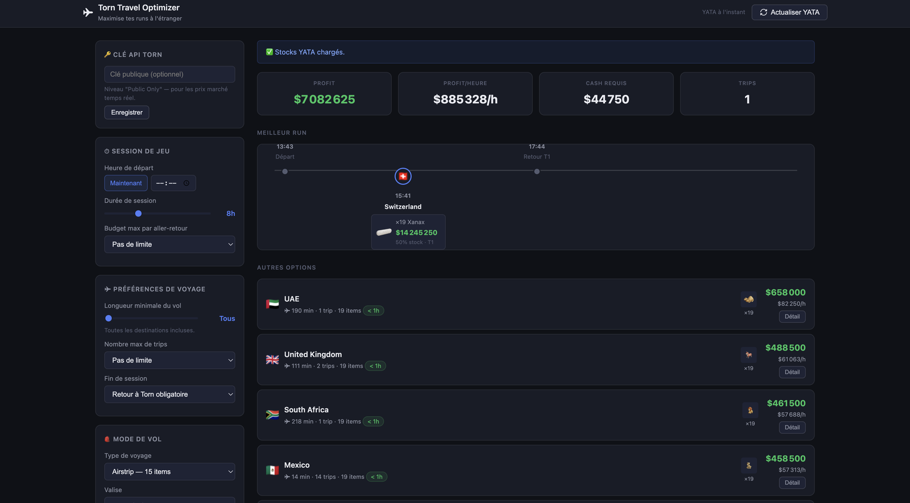
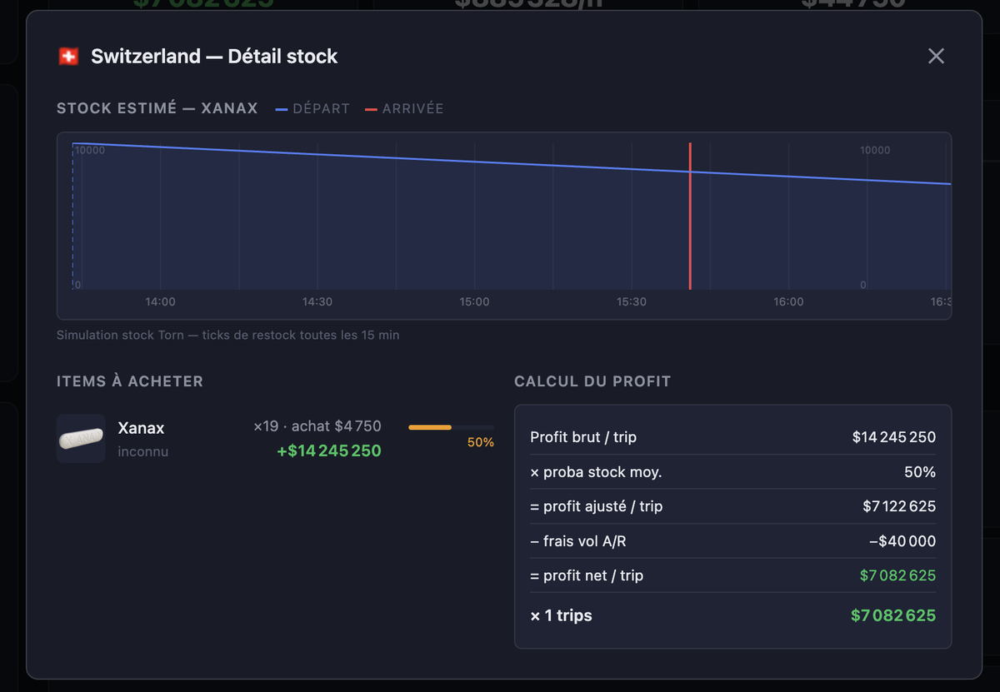

Dans Torn City, on peut acheter des objets à l'étranger et les revendre plus cher. L'outil dit où aller, quoi acheter et combien d'allers-retours faire sur une session.

Un aller-retour rapporte plus ou moins selon trois choses, qui tirent dans des sens différents :
En pratique, deux stratégies s'opposent : peu d'objets à très forte marge (drogues), ou beaucoup d'objets à marge plus faible mais au stock plus généreux (peluches, fleurs). L'outil chiffre les deux pour chaque pays.
C'est le cœur de l'outil. L'API YATA donne le stock au moment du dernier relevé, pas au moment où on atterrit. L'outil simule donc le stock minute par minute jusqu'à l'arrivée : il se vide à un rythme propre à chaque objet, puis se reconstitue par ticks de 15 minutes. Le modèle est calibré sur de vrais relevés YATA, une centaine sur une dizaine d'heures.

Pour chaque pays : combien d'allers-retours tiennent dans la session, quels objets ont la meilleure marge, comment remplir la valise. Les bonus de job ne s'appliquent qu'à leur catégorie (Toy Shop aux peluches, Flower Shop aux fleurs). Avec une clé API Torn, les prix de revente sont ceux du marché du jour. La clé reste dans le navigateur.
Le code est ouvert : retours, corrections et relevés de restock sont les bienvenus.